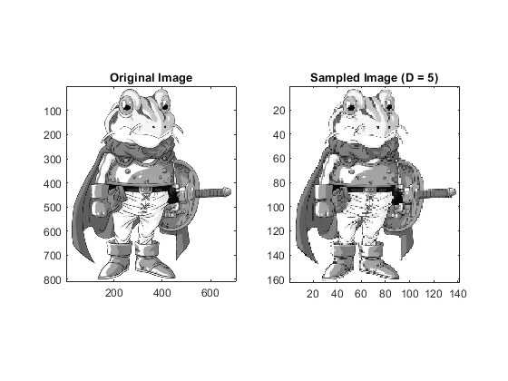
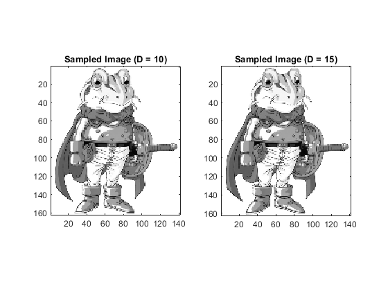
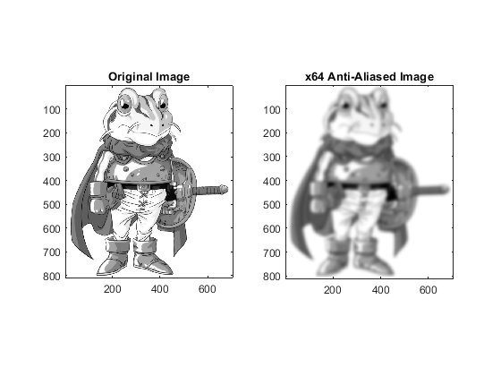
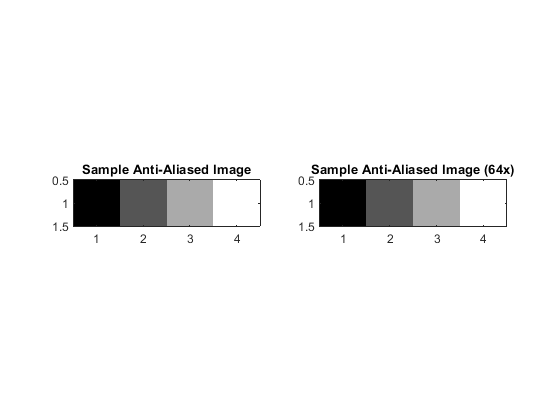
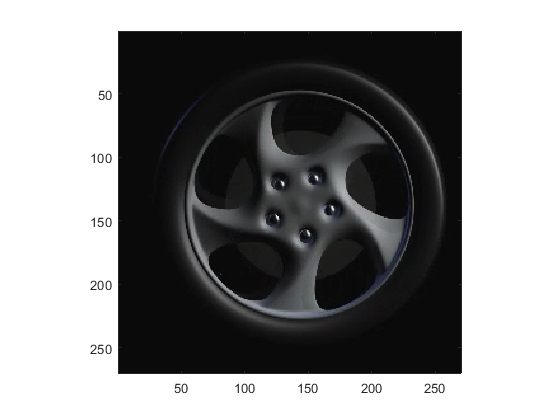

Contents
QUESTION 1 COMMENTING
type('eel3135_lab03_comment.m')
% USER DEFINED VARIABLES
w = 20; % Width of the Gaussian function
x = 0:1:79; % Horiztonal Axis
y = 0:1:79; % Vertical Axis
% ==> Creates a Gaussian-like 2D matrix based on specified width(w), generated
% using the exponential function to create a smooth decay from the center
% with a specified spread <==
z = round(exp(-1/w.^2*(((y.'-50)/1.5).^2+((x-20)).^2)));
% ==> Apply image processing systems to the matrix z.
% The first system (image_system1) samples and scales the image, while the
% second system (image_system2) applies a transformation based on the output
% of the first system <==
[xs,ys,zs] = image_system1(z,3,6);
za = image_system2(zs,90,-4);
% PLOT RESULT WITH SUBPLOT
figure(1);
subplot(1,3,1); % ==> Creates a subplot for the original image <==
imagesc(x, y, z); % ==> Displays the original z image with specified x and y axes <==
axis square; axis xy; % ==> Sets the aspect ratio to be equal and the y axis to increase up <==
title('Original') % ==> Sets the title of the subplot <==
subplot(1,3,2); % ==> Creates a subplot for the output of image_system1 <==
imagesc(xs, ys, zs); % ==> Displays the processed image zs after applying the changes from image_system1 <==
axis square; axis xy; % ==> Sets the aspect ratio to be equal and the y axis to increase up <==
title('After System 1')
subplot(1,3,3); % ==> Creates a new subplot for image_system2 <==
imagesc(xs, ys, za); % ==> Displays the processed image za after applying the changes from image_system2 <==
axis square; axis xy; % ==> Sets the aspect ratio to be equal and the y axis to increase up <==
title('After System 2')
function [xs, ys, zs] = image_system1(z,Ux,Dy)
%IMAGE_SYSTEM1 ===> This function processes the input image z by sampling and scaling it.
% Inputs:
% z - Input image matrix
% Ux - Upsampling factor in the horizontal direction
% Dy - Downsampling factor in the vertical direction <===
% ==> Initializes the output matriz zs with zero restricted based on upscaling and downscaling specifications <==
zs = zeros(ceil(size(z,2)/Dy),ceil(Ux*size(z,1)));
% ==> Create the new vertical axis ys based on Dy <==
ys = 1:ceil(size(z,1)/Dy);
xs = 1:ceil(Ux*size(z,2)); % ==> Create the new horizontal axis xs based on the upsampling factor Ux. <==
% ==> Fill the output matrix zs by sampling the input matrix z.
% The input image is downsampled by Dy in the vertical direction and upsampled
% by Ux in the horizontal direction. <==
zs(1:end,1:Ux:end) = z(1:Dy:end,1:end);
end
function [za] = image_system2(z,Sx,Sy)
%IMAGE_SYSTEM2 ===> This function applies a transformation to the input image z.
% Inputs:
% z - Input image matrix
% Sx - Shift in the horizontal direction
% Sy - Shift in the vertical direction <===
% ====> Initialize the output matrix za with zeros, having the same size as z. <====
za = zeros(size(z,1), size(z,2));
for nn = 1:size(z,1)
for mm = 1:size(z,2)
% ====> Check if the current pixel (nn, mm) is within the bounds after shifting. <====
if nn > Sy && nn-Sy < size(z,1) && mm > Sx && mm-Sx < size(z,2)
% ====> Assign the value from the shifted position in z to za, scaled by a factor of 1/2. <====
za(nn,mm) = 1/2*z(nn-Sy,mm-Sx);
end
end
end
end
QUESTION VARIABLES (DO NOT CHANGE)
x = 0:1:249;
y = 0:1:249;
z = imread('ai_lines.png'); z = mean(z,3);
z = imread('frog.jpg'); z = mean(z,3);
2(a) WRITE FUNCTION (SEE END OF FILE)
2(b) PEFORM SAMPLING
D = 5;
[xs, ys, zs] = sample(z,D);
figure;
subplot(1, 2, 1);
imagesc(z);
colormap(gray);
axis image;
title('Original Image');
subplot(1, 2, 2);
imagesc(zs);
colormap(gray);
axis image;
title(['Sampled Image (D = ', num2str(D), ')']);

2(c) PEFORM SAMPLING
D1 = 10;
[xs1, ys1, zs1] = sample(z,D);
subplot(1, 2, 1);
imagesc(zs1);
colormap(gray);
axis image;
title(['Sampled Image (D = ', num2str(D1), ')']);
D2 = 15;
[xs2, ys2, zs2] = sample(z,D);
subplot(1, 2, 2);
imagesc(zs2);
colormap(gray);
axis image;
title(['Sampled Image (D = ', num2str(D2), ')']);

2(d) ANSWER QUESTION
2(e) ANSWER QUESTION
3(a) WRITE FUNCTION
3(b) PERFORM ANTI-ALIASING (NO SAMPLING)
zaa = antialias(z);
subplot(1, 2, 1);
imagesc(z);
colormap(gray);
axis image;
title('Original Image');
subplot(1, 2, 2);
imagesc(zaa);
colormap(gray);
axis image;
title('Anti-Aliased Image');
3(c) PERFORM ANTI-ALIASING x64 (NO SAMPLING)
z64 = z;
for i = 1:64
z64 = antialias(z64);
end
subplot(1, 2, 1);
imagesc(z);
colormap(gray);
axis image;
title('Original Image');
subplot(1, 2, 2);
imagesc(z64);
colormap(gray);
axis image;
title('x64 Anti-Aliased Image');

3(d) PEFORM ANTI-ALIASING (WITH SAMPLING)
[zaas, ~, ~] = sample(zaa, 15);
[z64s, ~, ~] = sample(z64, 15);
subplot(1, 2, 1);
imagesc(zaas);
colormap(gray);
axis image;
title('Sample Anti-Aliased Image');
subplot(1, 2, 2);
imagesc(z64s);
colormap(gray);
axis image;
title('Sample Anti-Aliased Image (64x)');

3(e) ANSWER QUESTION
3(f) ANSWER QUESTION
QUESTION 4 VARIABLES (DO NOT CHANGE)
vid = VideoReader('wheel_video.mp4'); z = read(vid,[1 Inf]);
figure(1);
for i = 1:min(size(z, 4),30*4)
tic; imagesc(uint8(z(:,:,:,i))); axis square; tm = toc;
pause(1/30-tm);
end
v = VideoWriter('output_video','MPEG-4');
open(v); writeVideo(v,uint8(z)); close(v)

4(a) WRITE FUNCTION
4(b) MAKE SAMPLED VIDEO
Dx = 5;
Dy = 3;
Dt = 2;
sampled_video = video_sample(z, Dx, Dy, Dt);
for i = 1:min(size(z, 4),30*4)
tic; imagesc(uint8(z(:,:,:,i))); axis square; tm = toc;
pause(1/30-tm);
end
v = VideoWriter('sampled_video','MPEG-4');
open(v); writeVideo(v,uint8(sampled_video)); close(v);
4(c) ANSWER QUESTION
4(d) MAKE SAMPLED VIDEO
Dt = 1;
backward_video = video_sample(z, Dx, Dy, Dt);
for i = 1:min(size(z, 4),30*4)
tic; imagesc(uint8(z(:,:,:,i))); axis square; tm = toc;
pause(1/30-tm);
end
v = VideoWriter('backward_video','MPEG-4');
open(v); writeVideo(v,uint8(backward_video)); close(v);
4(e) ANSWER QUESTION
ALL FUNCTIONS SUPPORTING THIS CODE %%
function [xs, ys, zs] = sample(z, D)
zs = z(1:D:end, 1:D:end);
[rows, cols] = size(zs);
xs = 0:D:(cols-1);
ys = 0:D:(rows-1);
end
function zaa = antialias(z)
[rows, cols] = size(z);
zaa = zeros(rows, cols);
for x = 2:rows-1
for y = 2:cols-1
zaa(x, y) = (1/9) * (z(x-1, y-1) + z(x-1, y) + z(x-1, y+1) + ...
z(x, y-1) + z(x, y) + z(x, y+1) + ...
z(x+1, y-1) + z(x+1, y) + z(x+1, y+1));
end
end
zaa(1, :) = z(1, :);
zaa(end, :) = z(end, :);
zaa(:, 1) = z(:, 1);
zaa(:, end) = z(:, end);
end
function zs = video_sample(z, Dx, Dy, Dt)
zs = z(1:Dy:end, 1:Dx:end, :, 1:Dt:end);
end